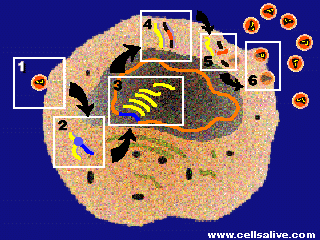

HIV and AIDS Problem Set
Problem 5: AZT, a reverse transcription inhibitor
|
Tutorial to help answer the question AZT, a reverse transcription inhibitor, stops HIV reproduction at what stage?
TutorialThe HIV lifecycle is divided into six stages: 
Reverse transcription is the second stage of the HIV lifecycle. HIV is unusual because it has RNA as its genetic material, not DNA like most viruses and cells. HIV undergoes reverse transcription to convert its genetic material (RNA) into a form compatible with its host's genetic material (DNA).
Reverse transcription inhibitors (RTIs) were the first drugs available to treat HIV. RTIs block reverse transcription.
If reverse transcription proceeds unhindered, the viral DNA produced integrates with host DNA and the cell produces both normal and viral proteins. Next the viral protein is cut by the protease enzyme, smaller proteins are assembled, and new copies of HIV are released. View animations of the HIV lifecycle and descriptions of drug actions,
courtesy of CellsAlive
|


The University of Arizona
Monday, April 3, 2000
Contact the Development Team
http://www.biology.arizona.edu
All contents copyright © 2000. All rights reserved.